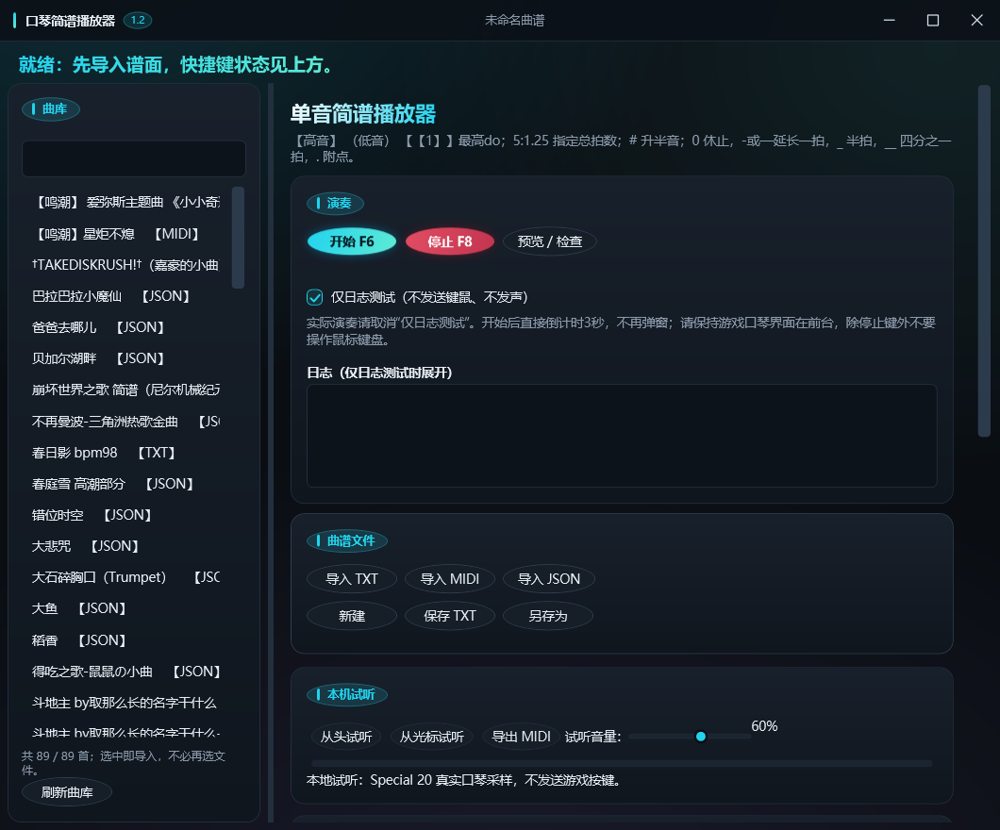
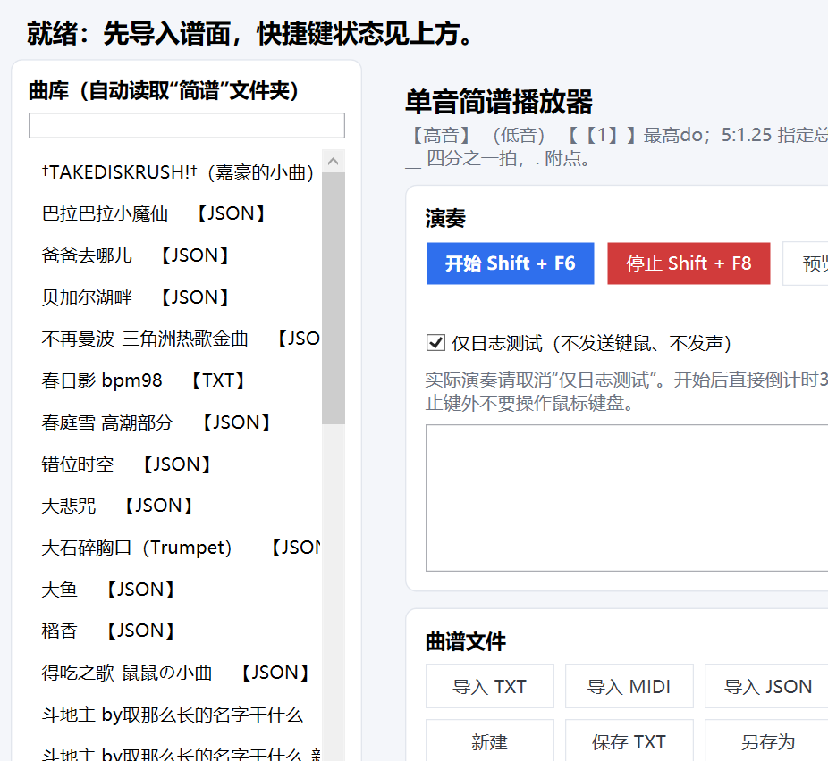

曲库侧栏
启动自动读取 EXE 同目录的 简谱\TXT、简谱\MIDI、简谱\JSON，按曲名列出一首首曲谱；选中即导入，顶部可筛选、底部可刷新。
把简谱（数字谱）转成《三角洲行动》里的口琴按键演奏。
还能编辑与保存 TXT 简谱、导入 MIDI / JSON 曲谱、用真实口琴采样本地试听、导出标准 MIDI。

FEATURES
在原作者 v0.3.3 的基础上重写了导入链路与主界面；以下是相对上游的主要能力。
启动自动读取 EXE 同目录的 简谱\TXT、简谱\MIDI、简谱\JSON，按曲名列出一首首曲谱；选中即导入，顶部可筛选、底部可刷新。
多音轨曲谱（MIDI / JSON）导入时弹窗列出每条音轨（编号、名称、音数、音域、平均音长、同时发声音数）；导入后可用「演奏音轨」下拉框随时换轨，不必重新导入。
左右两栏 + 功能卡片（演奏／曲谱文件／本机试听／曲谱编辑／快捷键与设置）；中间竖条可左右拖动调整曲库栏宽度，窗口可自由缩放。
选中音符后点按钮即可改谱：−八度 / ＋八度 / ＃升半音 / 还原 / 最高do，以及 1、½、¼、¾、1.5、2 拍与任意拍数；还能插入休止符与小节线。音高与时值互不影响，改错可 Ctrl+Z 撤销。
内置 Hohner Special 20 真实口琴采样；从头或从光标试听、当前音符高亮、音量 0～100%（默认 60%）。试听不发送游戏按键。
导出 Format 0、单轨、9600 PPQ、固定速度、GM 口琴音色（22 号）、力度 96；先写临时文件再替换，失败保留原目标。
3 秒倒计时后向目标窗口发送键鼠；默认开始 F6、停止 F8，可自定义。支持「仅日志测试」先干跑一遍。
LIBRARY
把曲谱丢进 简谱\TXT / 简谱\MIDI / 简谱\JSON，启动后左侧自动列出；也可以继续用「导入 TXT / MIDI / JSON」手动导入。
[3]（等同 【3】），AI 转来的谱不会因方括号打不开
GETTING STARTED
到 Releases 下载 HarmonicaPlayer-Revised-vX.Y-win-x64.zip。
解压到一个普通文件夹，不要在压缩包里直接双击 EXE（否则同目录的「简谱」会丢）。程序是自包含单文件，不需要安装 .NET，也不联网。
首次可能提示「未知发布者」（未做代码签名），点「更多信息」→「仍要运行」；杀毒误报时把所在文件夹加入白名单。设置写在 %LOCALAPPDATA%\HarmonicaPlayer\settings.json。
把曲谱放进 EXE 同目录的 简谱\TXT / MIDI / JSON，启动后左侧曲库自动列出，点一首即导入。
用「从头试听 / 从光标试听」核对旋律与速度，确认无误再上游戏。
取消「仅日志测试」→ 游戏里取出口琴 → 按开始键（默认 F6）→ 3 秒倒计时内切回游戏；停止键默认 F8。权限建议与游戏匹配，游戏建议无边框窗口；演奏期间除停止键外不要操作键鼠。
首次运行说明.txt，可以直接连压缩包一起发给使用者。
NOTATION
TXT 曲谱沿用 HarmonicaPlayer/1，旧纯音符 TXT 仍可导入。文件名可写「歌名 bpm100.txt」等多种形式。
| 写法 | 含义 |
|---|---|
1～7 | 中音，一拍 |
【1】～【7】 | 高一个八度 |
（1） 或 (1) | 低一个八度 |
【【1】】 | 高两个八度 do，仅此音 |
#1、【#1】 | 升半音 |
0 | 休止一拍 |
5_、5__ | 半拍、四分之一拍 |
5.、5_. | 1.5 拍、0.75 拍 |
5 —、0 — | 增加一拍 |
5:1.25 | 同一个音总共持续 1.25 拍 |
@format=HarmonicaPlayer/1
@title=节奏示例
@bpm=120
@gap=20
1 2_ 3_ 5 — |
0 6. 5_ 1 |ATTRIBUTION
本项目基于原作者
lanselanlanxi-wq/HarmonicaPlayer
修改而来（基线 v0.3.3，212316e），新增了 MIDI / JSON 导入、音轨选择、曲库侧栏与新界面等功能。
原代码版权归原作者，本项目不是官方版本。
逐项修改内容、许可与版权说明见仓库中的 NOTICE.md， 贡献来源与采纳范围见 CONTRIBUTIONS.md。
发布包内附带的曲谱为他人音乐作品的转谱，版权归各自原作者 / 转谱者，仅供个人学习与演奏使用，请勿用于商业用途。